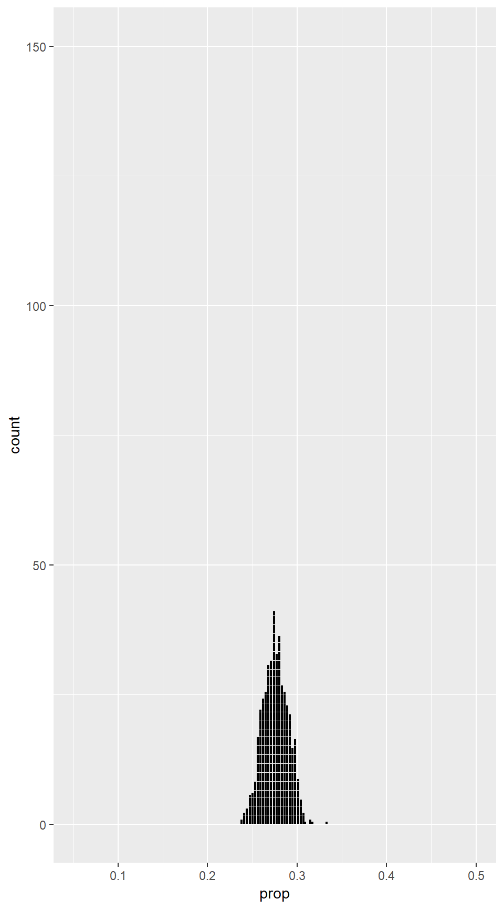
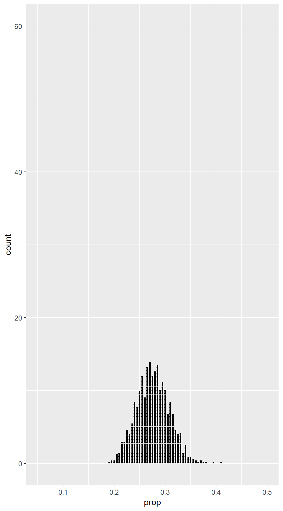
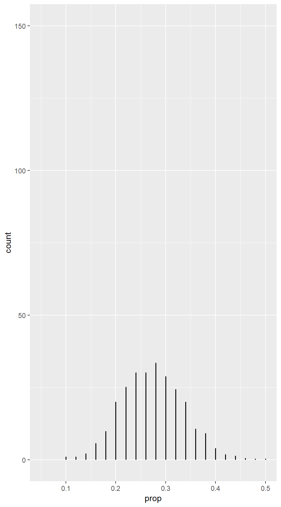
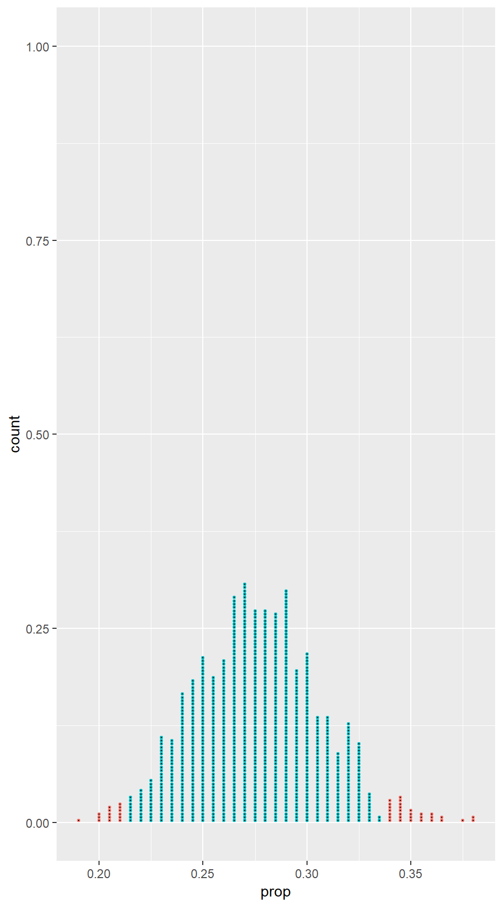
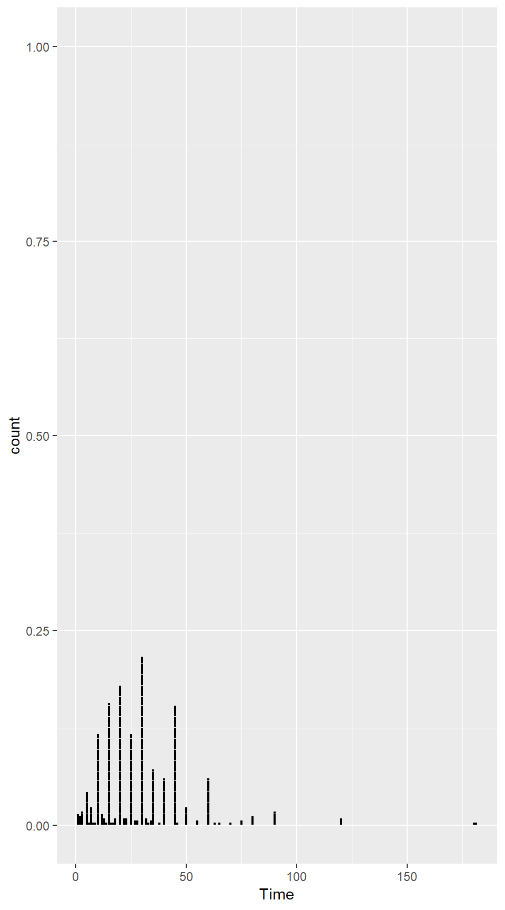
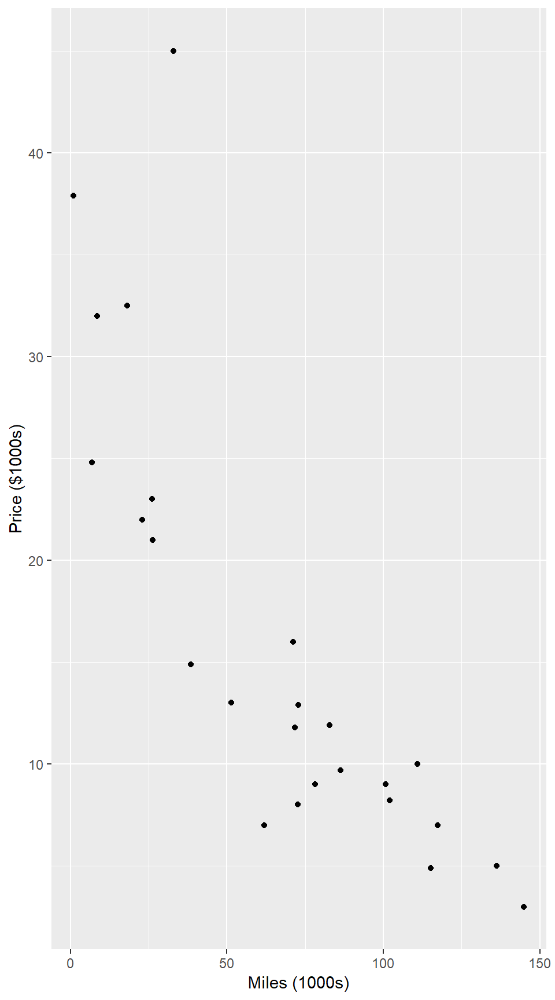

3 Confidence Intervals
3.1 Sampling Distributions
The key idea in this chapter is the notion of a sampling distribution. Do not confuse it with the population (what we would like to know about) or the sample (what we actually have data about). If we could repeatedly sample from a population, and if we computed a statistic from each sample, the distribution of those statistics would be the sampling distribution. Sampling distributions tell us how things vary from sample to sample and are the key to interpreting data.
Variability of Sample Statistics
Example 3.4
head(StatisticsPhD)## University Department FTGradEnrollment
## 1 Baylor University Statistics 26
## 2 Boston University Biostatistics 39
## 3 Brown University Biostatistics 21
## 4 Carnegie Mellon University Statistics 39
## 5 Case Western Reserve University Statistics 11
## 6 Colorado State University Statistics 14mean(~FTGradEnrollment, data = StatisticsPhD) # mean enrollment in original population## [1] 53.53659Example 3.5
To select a random sample of a certain size in R we can use the sample() function.
sample10 <- sample(StatisticsPhD, 10); sample10## University Department FTGradEnrollment orig.id
## 20 Medical College of Georgia Biostatistics 11 20
## 11 Emory University Biostatistics 58 11
## 64 University of Nebraska Statistics 44 64
## 49 University of Chicago Statistics 109 49
## 27 Northwestern University Statistics 12 27
## 35 Southern Methodist University Statistics 21 35
## 75 University of Washington Statistics 53 75
## 69 University of Rochester Biostatistics 18 69
## 65 University of North Carolina Biostatistics 118 65
## 28 Ohio State University Statistics 101 28x.bar <- mean(~FTGradEnrollment, data = sample10); x.bar # mean enrollment in sample10## [1] 54.5Note that this sample has been assigned a name to which we can refer back to find the mean of that particular sample.
mean(~FTGradEnrollment, data = sample(StatisticsPhD, 10)) # mean enrollment in another sample ## [1] 68.9Figure 3.1
We should check that that our sample distribution has an appropriate shape:
# Now we'll do it 1000 times
Sampledist <- do(1000) * mean( ~ FTGradEnrollment, data = sample(StatisticsPhD, 10))
head(Sampledist, 3)## mean
## 1 59.2
## 2 56.0
## 3 68.1gf_dotplot( ~ mean, binwidth = .9, data = Sampledist)In many (but not all) situations, the sampling distribution is
- unimodal,
- symmetric, and
- bell-shaped (The technical phrase is “approximately normal”.)
Example 3.6
This time we don’t have data, but instead we have a summary of the data. We can however, still simulate the sample distribution by using the rflip() function.
Sampledist.deg <- do(1000) * rflip(200, 0.275) # 1000 samples, each of size 200 and proportion 0.275
head(Sampledist.deg, 3)## n heads tails prop
## 1 200 49 151 0.245
## 2 200 51 149 0.255
## 3 200 45 155 0.225gf_dotplot(~ prop, binwidth = .002, data = Sampledist.deg)Measuring Sampling Variability: The Standard Error
The standard deviation of a sampling distribution is called the standard error, denoted \(SE\).
The standard error is our primary way of measuring how much variability there is from sample statistic to sample statistic, and therefore how precise our estimates are.
Example 3.7
Calculating the SE is the same as calculating the standard deviation of a sampling distribution, so we use sd().
SE <- sd( ~ mean, data = Sampledist); SE # sample from Example 3.5## [1] 10.94816SE2 <- sd(~prop, data = Sampledist.deg); SE2 # sample from Example 3.6## [1] 0.03039522The Importance of Sample Size
Example 3.9
Sampledist.1000 <- do(1000) * rflip(1000, 0.275) # 1000 samples, each of size 1000 and proportion 0.275
Sampledist.200 <- do(1000) * rflip(200, 0.275) # 1000 samples, each of size 200 and proportion 0.275
Sampledist.50 <- do(1000) * rflip(50, 0.275) # 1000 samples, each of size 50 and proportion 0.275Figure 3.3
gf_dotplot(~ prop, binwidth = .0025, data = Sampledist.1000) %>% gf_lims(
x = c(.05,.5), y = c(0, 150))
gf_dotplot(~ prop, binwidth = .003, data = Sampledist.200) %>% gf_lims(
x = c(.05,.5), y = c(0, 60))
gf_dotplot(~ prop, binwidth = .0015, data = Sampledist.50) %>% gf_lims(
x = c(.05,.5), y = c(0, 150))
3.2 Understanding and Interpreting Confidence Intervals
Interval Estimates and Margin of Error
An interval estimate gives a range of plausible values for a population parameter.
This is better than a single number (also called a point estimate) because it gives some indication of the precision of the estimate.
One way to express an interval estimate is with a point estimate and a margin of error.
We can convert margin of error into an interval by adding and subtracting the margin of error to/from the statistic.
Example 3.12
p.hat <- 0.42 # sample proportion
MoE <- 0.03 # margin of error
p.hat - MoE # lower limit of interval estimate## [1] 0.39p.hat + MoE # upper limit of interval estimate## [1] 0.45Example 3.13
p.hat <- 0.54 # sample proportion
MoE <- 0.02 # margin of error
p.hat - MoE # lower limit of interval estimate## [1] 0.52p.hat + MoE # upper limit of interval estimate## [1] 0.56p.hat <- 0.54
MoE <- 0.10
p.hat - MoE## [1] 0.44p.hat + MoE## [1] 0.64Confidence Intervals
A confidence interval for a parameter is an interval computed from sample data by a method that will capture the parameter for a specified proportion of all samples
- The probability of correctly containing the parameter is called the coverage rate or confidence level.
- So 95% of 95% confidence intervals contain the parameter being estimated.
- The margins of error in the tables above were designed to produce 95% confidence intervals.
Example 3.14
x.bar <- 61.5 # given sample mean
SE <- 11 # given estimated standard error
MoE <- 2 * SE; MoE # margin of error for 95<!-- CI -->## [1] 22x.bar - MoE # lower limit of 95<!-- CI -->## [1] 39.5x.bar + MoE # upper limit of 95<!-- CI -->## [1] 83.5Understanding Confidence Intervals
Example 3.15
SE <- 0.03
p1 <- 0.26
p2 <- 0.32
p3 <- 0.20
MoE <- 2 * SEp1-MoE## [1] 0.2p1+MoE## [1] 0.32p2-MoE## [1] 0.26p2+MoE## [1] 0.38p3-MoE## [1] 0.14p3+MoE## [1] 0.26Figure 3.12
p <- 0.275
SE <- 0.03
MoE <- 2 * SE
p - MoE## [1] 0.215p + MoE## [1] 0.335gf_dotplot(~ prop, binwidth = .002, dotsize = .8, colour = ~(0.215 <= prop & prop <= 0.335), data = Sampledist.deg, show.legend = FALSE)
Notice how we defined groups in this dotplot. We are grouping proportions that less than 0.215 and more than 0.335.
Figure 3.13
We can create the data needed for plots like Figure 3.13 using CIsim().
CIsim(200, samples = 3, rdist = rbinom, args = list(size = 1, prob = 0.275),
method = binom.test, method.args = list(success = 1),
verbose = FALSE, estimand = 0.275)
CIsim(200, samples = 100, rdist = rbinom, args = list(size = 1, prob = 0.275),
method = binom.test, method.args = list(success = 1),
verbose = FALSE, estimand = 0.275)Interpreting Confidence Intervals
Example 3.16
x.bar <- 27.655
SE <- 0.009
MoE <- 2 * SE
x.bar - MoE## [1] 27.637x.bar + MoE## [1] 27.673Example 3.17
diff.x <- -1.915
SE <- 0.016
MoE <- 2 * SE
diff.x - MoE## [1] -1.947diff.x + MoE## [1] -1.8833.3 Constructing Bootstrap Confidence Intervals
Here’s the clever idea: We don’t have the population, but we have a sample. Probably the sample it similar to the population in many ways. So let’s sample from our sample. We’ll call it resampling (also called bootstrapping). We want samples the same size as our original sample, so we will need to sample with replacement. This means that we may pick some members of the population more than once and others not at all. We’ll do this many times, however, so each member of our sample will get its fair share. (Notice the similarity to and difference from sampling from populations in the previous sections.)
Figure 3.14
gf_dotplot(~Time, binwidth = 1, data = CommuteAtlanta)
3.3.1 Bootstrap Samples
Table 3.7
The computer can easily do all of the resampling by using the resample().
mean(~Time, data = resample(CommuteAtlanta)) # mean commute time in one resample## [1] 29.036mean(~Time, data = resample(CommuteAtlanta)) # mean commute time in another resample## [1] 30.532mean(~Time, data = resample(CommuteAtlanta))## [1] 30.15Bootstrap Distribution
Figure 3.16
The example below uses data from 500 Atlanta commuters.
# Now we'll do it 1000 times
Bootstrap <- do(1000) * mean( ~Time, data = resample(CommuteAtlanta))
head(Bootstrap, 3)## mean
## 1 29.890
## 2 28.686
## 3 28.846# We should check that that our bootstrap distribution has an appropriate shape:
gf_dotplot( ~ mean, binwidth = 0.08, data = Bootstrap)Example 3.19
BootP <- do(1000) * rflip(100, .52)
head(BootP, 3)## n heads tails prop
## 1 100 48 52 0.48
## 2 100 44 56 0.44
## 3 100 55 45 0.55gf_dotplot(~ prop, binwidth = .002, data = BootP)Example 3.20
Variables can be created in R using the c() function then collected into
a data frame using the data.frame() function.
Laughter <- data.frame( NumLaughs = c(16, 22, 9, 31, 6, 42) )
mean( ~ NumLaughs, data = Laughter )## [1] 21mean( ~NumLaughs, data = resample(Laughter))## [1] 24.33333mean( ~NumLaughs, data = resample(Laughter))## [1] 24.5mean( ~NumLaughs, data = resample(Laughter))## [1] 16.33333Estimating Standard Error Based on a Bootstrap Distribution
Example 3.21
Since the shape of the bootstrap distribution from Example 3.19 looks good, we can estimate the standard error.
SE <- sd(~prop, data = BootP); SE## [1] 0.0483108495% Confidence Interval Based on a Bootstrap Standard Error
Example 3.22
We can again use the standard error to compute a 95<!– confidence interval. –>
x.bar <- mean(~Time, data = CommuteAtlanta); x.bar## [1] 29.11SE <- sd( ~ mean, data = Bootstrap ); SE # standard error## [1] 0.8695973MoE <- 2 * SE; MoE # margin of error for 95<!-- CI -->## [1] 1.739195x.bar - MoE # lower limit of 95<!-- CI -->## [1] 27.37081x.bar + MoE # upper limit of 95<!-- CI -->## [1] 30.84919p.hat <- 0.52
SE <- sd( ~prop, data = BootP); SE ## [1] 0.04831084MoE <- 2 * SE; MoE ## [1] 0.09662168p.hat - MoE ## [1] 0.4233783p.hat + MoE ## [1] 0.6166217The steps used in this example get used in a wide variety of confidence interval situations.
Compute the statistic from the original sample.
Create a bootstrap distribution by resampling from the sample.
\(a\) same size samples as the original sample \(b\) with replacement \(c\) compute the statistic for each sample
The distribution of these statistics is the bootstrap distribution
Estimate the standard error \(SE\) by computing the standard deviation of the bootstrap distribution.
95% CI is \[ \mbox{statistic} \pm 2 SE \]
3.4 Bootstrap Confidence Intervals Using Percentiles
Confidence Intervals Based on Bootstrap Percentiles
Example 3.23
Another way to create a 95% confidence interval is to use the middle 95% of the bootstrap distribution. The cdata() function can compute this for us as follows:
cdata( ~ mean, 0.95, data = Bootstrap)## low hi central.p
## 27.38995 30.81235 0.95000This is not exactly the same as the interval of the original sample, but it is pretty close.
Figure 3.22
gf_dotplot(~ mean, binwidth = .08, colour = ~(27.43 <= mean & mean <= 31.05),
data = Bootstrap, show.legend = FALSE)Notice the colour= for marking the confidence interval. #### Example 3.24 {-}
One advantage of this method is that it is easy to change the confidence level.
To make a 90% and 99% confidence interval, we use the middle 90% and 99% of the sample distribution instead.
cdata(~ mean, 0.90, data = Bootstrap)## low hi central.p
## 27.6736 30.5386 0.9000gf_dotplot(~ mean, binwidth = .08, colour = ~(27.70 <= mean & mean <= 30.71),
data = Bootstrap, show.legend = FALSE)cdata( ~ mean, 0.99, data = Bootstrap)## low hi central.p
## 26.99799 31.41650 0.99000gf_dotplot(~ mean, binwidth = .08, colour = ~(26.98 <= mean & mean <= 31.63),
data = Bootstrap, show.legend = FALSE)
Finding Confidence Intervals for Many Different Parameters
Figure 3.24
gf_boxplot(Exercise~Gender, data=ExerciseHours)
Example 3.25
head(ExerciseHours)## Year Gender Hand Exercise TV Pulse Pierces
## 1 4 M l 15 5 57 0
## 2 2 M l 20 14 70 0
## 3 3 F r 2 3 70 2
## 4 1 F l 10 5 66 3
## 5 1 M r 8 2 62 0
## 6 1 M r 14 14 62 0favstats(~Exercise|Gender, data = ExerciseHours)## Gender min Q1 median Q3 max mean sd n missing
## 1 F 0 3 10 12.00 34 9.4 7.407359 30 0
## 2 M 2 3 12 19.25 30 12.4 8.798325 20 0stat <- diffmean(Exercise~Gender, data = ExerciseHours); stat## diffmean
## 3BootE <- do(3000) * diffmean(Exercise~Gender, data = resample(ExerciseHours))
head(BootE, 3)## diffmean
## 1 5.1166667
## 2 0.6457327
## 3 3.8555008cdata( ~ diffmean, 0.95, data = BootE)## low hi central.p
## -1.441927 7.762792 0.950000gf_dotplot(~ diffmean, binwidth = .20, dotsize = .45,
colour = ~(-1.717 <= diffmean & diffmean <= 7.633),
xlab = "Difference in mean", data = BootE, show.legend = FALSE)SE <- sd( ~ diffmean, data = BootE); SE## [1] 2.357225stat - 2 * SE## diffmean
## -1.714449stat + 2 * SE## diffmean
## 7.714449Figure 3.26
gf_point(Price~Miles, ylab = "Price ($1000s)", xlab = "Miles (1000s)", data = MustangPrice)
cor(Price~Miles, data = MustangPrice)## [1] -0.8246164Example 3.26
BootM <- do(5000) * cor(Price~Miles, data = resample((MustangPrice)))
head(BootM, 3)## cor
## 1 -0.8320238
## 2 -0.7958544
## 3 -0.8020954cdata( ~ cor, 0.98, data = BootM)## low hi central.p
## -0.9371703 -0.7051427 0.9800000gf_dotplot( ~ cor, binwidth = .002, colour = ~(-.940 <= cor & cor <= -.705),
xlab = "r", data = BootM, show.legend = FALSE)Another Look at the Effect of Sample Size
Example 3.27
BootP400 <- do(1000) * rflip(400, .52)
head(BootP400, 3)## n heads tails prop
## 1 400 197 203 0.4925
## 2 400 206 194 0.5150
## 3 400 194 206 0.4850cdata( ~ prop, 0.95, data = BootP400)## low hi central.p
## 0.4700 0.5675 0.9500gf_dotplot(~ prop, binwidth = 0.002, colour = ~(0.472 <= prop & prop<= 0.568),
data = BootP400, show.legend = FALSE)One Caution on Constructing Bootstrap Confidence Intervals
Example 3.28
median(~ Price, data = MustangPrice )## [1] 11.9Boot.Mustang <- do(5000) * median( ~Price, data = resample(MustangPrice) )
head(Boot.Mustang, 3)## median
## 1 13.0
## 2 11.9
## 3 11.9gf_histogram( ~ median, bins = 50, data = Boot.Mustang)This time the histogram does not have the desired shape. There are two problems:
- The distribution is not symmetric. (It is right skewed.)
- The distribution has spikes and gaps.
Since the median must be an element of the sample when the sample size is 25, there are only 25 possible values for the median (and some of these are very unlikely.
Since the bootstrap distribution does not look like a normal distribution (bell-shaped, symmetric), we cannot safely use our methods for creating a confidence interval.